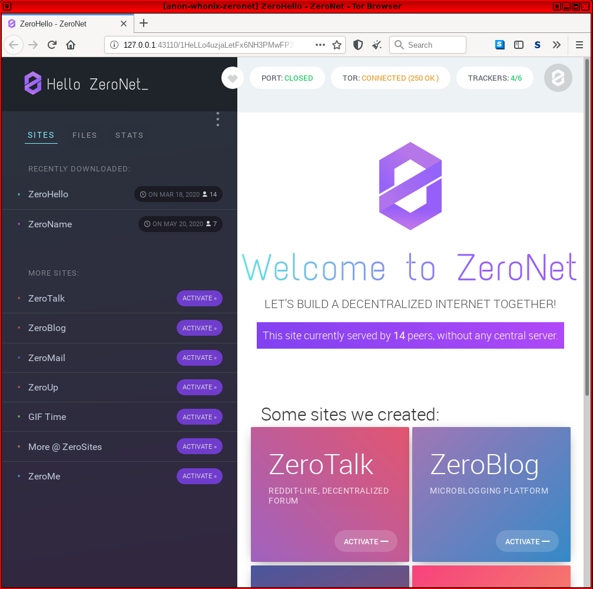

We believe security software like Whonix needs to remain Open Source and independent. Would you help sustain and grow the project? Learn more about our 14 year success story and maybe DONATE!
I2PDocumentationTor ControllerPrevious page: I2PIndex page: DocumentationNext page: Tor ControllerZeroNet: Decentralized Censorship-resistant Network
About this
ZeroNet
Page |
|---|
Support Status |
Difficulty |
Support |
Combining Whonix with ZeroNet. ZeroNet over Tor. Connecting to Tor before ZeroNet.
User → Tor → ZeroNet →
Internet
 Warning:
Warning:
- The ZeroNet project is deprecated
- Please don't use this project for critical or production work.
Deprecated Wiki Page
The original developer of ZeroNet disappeared approximately February 2021, and there have been no commits in project repo since then.[1] There is a continuation of the ZeroNet project in the form of a software forks like ZeroNetX and ZeroNet-Conservancy. [2] No review / commentary on these forks available or planned by Whonix. These are undocumented.
Introduction
The ZeroNet wiki describes the software design: [3]
ZeroNet uses Bitcoin cryptography and BitTorrent technology to build a decentralized censorship-resistant network.
Users can publish static or dynamic websites in ZeroNet and visitors can choose to also serve the website. Websites will remain online even if it is being served by only one peer.
This means users are not identified or reachable by an IP address, since they are identified by a public key - specifically a public Bitcoin address. The private key owner can sign and publish changes, which are propagated through the network. Sites are accessed through an ordinary browser in combination with the Zeronet application. [4] The BitTorrent technology refers to the use of trackers to negotiate peer connections. [5] ZeroNet can be optionally configured to use Tor for anonymity?
The Zeronet wiki describes various features and benefits, including: [3]
- Password-less authorization - the user account is protected by the same cryptography that applies to Bitcoin wallets.
- Easy setup. [6]
- Immediate updating of sites in real time.
- Works with any browser.
- Full Tor network support, including onion services.
- Content cannot be censored (removed) after publication.
- It is impossible to shut down content, since content is served by any user who wishes to.
- ZeroNet is fast and works offline.
Connecting to Tor before ZeroNet
These instructions lead to the following connection scheme in Whonix:
User → Tor → ZeroNet →
Internet
Installation
 This application requires incoming connections through a Tor onion service. Supported Whonix-Gateway™
modifications are therefore necessary for full functionality; see the
instructions below.
This application requires incoming connections through a Tor onion service. Supported Whonix-Gateway™
modifications are therefore necessary for full functionality; see the
instructions below.
For better security, consider using Multiple Whonix-Gateway and Multiple Whonix-Workstation™. In any case, Whonix is the safest choice for running it. [7]
onion-grater Adjustments
Complete the following steps in Whonix-Gateway™
(sys-whonix).
Extend the onion-grater whitelist.
Modify Firewall Settings
Modify the Whonix-Workstation™ (anon-whonix)
user firewall settings and reload them.
1. Modify Whonix-Workstation User Firewall Settings
Note: If no changes have yet been made to Whonix
Firewall Settings, then the Whonix User Firewall Settings File
/etc/whonix_firewall.d/50_user.conf appears empty (because
it does not exist). This is expected.
Ensure the VM has sudo access first. If
PERSISTENT Mode | SYSMAINT Session is available in some
form, you must boot into this mode before these steps will work.
Platform specific. Select your platform.
Graphical Whonix-Workstation USER Session
Start Menu → System Tools →
User Firewall SettingsGraphical Whonix-Workstation SYSMAINT Session
System Maintenance Panel → Open Terminal →
run /usr/libexec/whonix-firewall/firewall50userQubes App Launcher (blue/grey "Q") →
Whonix-Workstation App Qube (commonly called anon-whonix)
→ QTerminal → run
sudoedit /usr/local/etc/whonix_firewall.d/50_user.confTerminal Whonix-Workstation
Open file /usr/local/etc/whonix_firewall.d/50_user.conf
with root rights.
sudoedit /usr/local/etc/whonix_firewall.d/50_user.conf
For more help, press on Learn More on the right.
Note: This is for informational purposes only! Do
not edit
/etc/whonix_firewall.d/30_whonix_workstation_default.conf.
The Whonix Global Firewall Settings File
/etc/whonix_firewall.d/30_whonix_workstation_default.conf
contains default settings and explanatory comments about their purpose.
By default, the file is opened read-only and is not meant to be directly
edited. Below, it is recommended to open the file without root rights.
The file contains an explanatory comment on how to change firewall
settings.
## Please use "/etc/whonix_firewall.d/50_user.conf" for your custom configuration,
## which will override the defaults found here. When Whonix is updated, this
## file may be overwritten.Also see: Whonix modular flexible .d style configuration folders.
To view the file, follow these instructions.
If using Qubes-Whonix, complete these steps.
Qubes App Launcher (blue/grey "Q") →
Template → whonix-workstation-18 →
QTerminal → run
nano /etc/whonix_firewall.d/30_whonix_workstation_default.conf
If using a graphical Whonix-Workstation, complete these steps.
Start Menu → System Tools →
Global Firewall Settings
If using a terminal Whonix-Workstation, complete these steps.
In Whonix-Workstation, view the global firewall configuration file in an editor. nano /etc/whonix_firewall.d/30_whonix_workstation_default.conf
2. Open required external ports.
Add.
EXTERNAL_OPEN_PORTS+=" 15441 " EXTERNAL_OPEN_PORTS+=" 33750 "
Save the file.
3. Reload Whonix-Workstation Firewall.
Ensure the VM has sudo access first. If
PERSISTENT Mode | SYSMAINT Session is available in some
form, and you are not booted into it, reboot the VM to reload the
firewall.
Platform-specific. Select your platform.
Graphical Whonix-Workstation USER Session
Start Menu → System Tools →
Reload FirewallGraphical Whonix-Workstation SYSMAINT Session
System Maintenance Panel → Open Terminal →
run sudo whonix_firewallTerminal Whonix-Workstation
sudo
whonix_firewall
Qubes App Launcher (blue/grey "Q") →
Whonix-Workstation App Qube (commonly named anon-whonix) →
QTerminal → run sudo whonix_firewallInstall Dependencies
Run the following commands in Whonix-Workstation terminal (Qubes-Whonix™:
whonix-workstation-18 Template).
Update the package lists.
sudo apt update
Install dependencies. [8]
sudo apt install git python3-pip python3-msgpack
Retrieve the Signing Key
Run the following command in Whonix-Workstation terminal (Qubes-Whonix: anon-whonix
AppVM).
Retrieve the ZeroNet signing key. [9]
- Digital signatures are a tool enhancing download security. They are commonly used across the internet and nothing special to worry about.
- Optional, not required: Digital signatures are optional and not mandatory for using Whonix, but an extra security measure for advanced users. If you've never used them before, it might be overwhelming to look into them at this stage. Just ignore them for now.
- Learn more: Curious? If you are interested in becoming more familiar with advanced computer security concepts, you can learn more about digital signatures here: Verifying Software Signatures
Securely download the signing key.
scurl-download https://zeronet.io/files/tamas@zeronet.io_pub.asc
Display the key's fingerprint.
gpg --keyid-format long --import --import-options show-only --with-fingerprint tamas@zeronet.io_pub.asc
Verify the fingerprint. It should show.
Note: Key fingerprints provided on the Whonix website are for convenience only. The Whonix project does not have the authorization or the resources to function as a certificate authority, and therefore cannot verify the identity or authenticity of key fingerprints. The ultimate responsibility for verifying the authenticity of the key fingerprint and correctness of the verification instructions rests with the user.
Key fingerprint = 960F FF2D 6C14 5AA6 13E8 491B 5B63 BAE6 CB96 13AE
The most important check is confirming the key fingerprint exactly matches the output above. [10]
 Warning:
Warning:
Do not continue if the fingerprint does not match! This risks using infected or erroneous files! The whole point of verification is to confirm file integrity.
Add the signing key.
gpg --import tamas@zeronet.io_pub.asc
Install ZeroNet
Run the following commands in Whonix-Workstation terminal (Qubes-Whonix: anon-whonix
AppVM).
ZeroNet is not yet packaged for Debian, so it must be manually installed. [11] [12]
Download ZeroNet.
git clone https://github.com/HelloZeroNet/ZeroNet.git
Navigate to the ZeroNet folder.
cd ZeroNet
Check the ZeroNet signature.
git log --show-signature
Install dependencies of ZeroNet. There is currently no better way
than using a third party repository and third party package manager
pip. [13]
 Security Warning: Adding a third-party repository
and/or installing third-party software allows the vendor to replace any
software on your system, including but not limited to the installation
of malware, file deletion, and
data harvesting. Proceed at your own risk! See also Foreign
Sources for further information. For greater safety, users adding
third-party repositories should always use Multiple
Whonix-Workstation™ to compartmentalize VMs with
additional software.
Security Warning: Adding a third-party repository
and/or installing third-party software allows the vendor to replace any
software on your system, including but not limited to the installation
of malware, file deletion, and
data harvesting. Proceed at your own risk! See also Foreign
Sources for further information. For greater safety, users adding
third-party repositories should always use Multiple
Whonix-Workstation™ to compartmentalize VMs with
additional software.
 Documentation in the Whonix wiki provides guidance on adding third-party
software from various upstream repositories. This is especially useful
since upstream often includes generic instructions for different Linux
distributions, which may be complex for users to follow. Additionally,
documentation in Whonix usually places a higher emphasis on security and
verifying digital software signatures.
Documentation in the Whonix wiki provides guidance on adding third-party
software from various upstream repositories. This is especially useful
since upstream often includes generic instructions for different Linux
distributions, which may be complex for users to follow. Additionally,
documentation in Whonix usually places a higher emphasis on security and
verifying digital software signatures.
The instructions provided here serve as a "translation layer" from upstream documentation to Whonix, offering assistance in most scenarios. Nevertheless, it's important to recognize that upstream repositories and software may change over time. Consequently, the documentation on this wiki might require occasional updates, such as revised signing key fingerprints, to remain current and accurate.
Please note, this is a general wiki template and may not apply to all upstream documentation scenarios.
Users encountering issues, such as signing key problems, are advised
to follow the Self
Support First Policy and engage in Generic
Bug Reproduction. This involves attempting to replicate the issue on
Debian trixie, and contacting upstream directly if the
issue can be reproduced, as such problems are likely unspecific to Whonix. In most
cases, Whonix is not responsible for, nor capable of resolving, issues
stemming from third-party software.
For further information, refer to Introduction, User Expectations - What Documentation Is and What It Is Not.
Should the user encounter bugs related to third-party software, it is advisable to report these issues to the respective upstream projects. Additionally, users are encouraged to share links to upstream bug reports in the Whonix forums and/or make edits to this wiki page. For example, if there are outdated links or key fingerprints that need updating, please feel free to make the necessary changes. Contributions aimed at maintaining the accuracy and currency of information are highly valued. These updates not only improve the quality of the wiki but also serve as a useful resource for other users.
The Whonix wiki is an open platform where everyone is welcome to contribute improvements and edits, with or without an account. Edits to this wiki are subject to moderation, so contributors should not worry about making mistakes. Your edits will be reviewed before being made public, ensuring the integrity and accuracy of the information provided.
sudo python3 -m pip install -r requirements.txt
Launch ZeroNet
1. Launch the ZeroNet process.
./zeronet.py --tor always --fileserver_ip $(qubesdb-read /qubes-ip)
./zeronet.py --tor always --fileserver_ip 10.152.152.11
2. Launch Tor Browser.
Start Tor Browser.
If you are using Qubes-Whonix™.
Qubes Start Menu →
Whonix-Workstation™ AppVM (commonly called anon-whonix)
→ Tor Browser
If you are using Non-Qubes-Whonix.
Start Menu → Tor Browser
If you are using a terminal (Konsole).
torbrowser
3. Adjust Tor Browser's configuration.
Note: The following steps will no longer be required once Whonix releases a custom Tor Browser for connecting to alternative networks. [14]
Configure Tor Browser to connect to localhost.
 Warning:
Warning:
- This step changes the web fingerprint of Tor Browser!
- Leave all other settings as is!
In Tor Browser:
- Type
about:configinto the URL bar. - Press
Enter - Search for
network.proxy.no_proxies_on - Set to
0 - Search for
network.proxy.allow_hijacking_localhost - Set to
false
4. Navigate to the ZeroNet web interface.
Paste into Tor Browser's URL field and press Enter. For
additional tips on visiting sites, see: How
does it work?
The process is now complete and ZeroNet should be fully functional in Whonix. [15]
Figure: ZeroNet Homepage in Whonix

Popular ZeroNet Sites
Some popular ZeroNet sites include: [16]
ZeroHello: http://127.0.0.1:43110/1HeLLo4uzjaLetFx6NH3PMwFP3qbRbTf3D
The homepage of ZeroNet.
ZeroMail: http://127.0.0.1:43110/1MaiL5gfBM1cyb4a8e3iiL8L5gXmoAJu27
End-to-end encrypted, distributed, P2P messaging site. To improve privacy it uses a BitMessage-like solution and will not expose the message recipient.
ZeroBlog: http://127.0.0.1:43110/1BLogC9LN4oPDcruNz3qo1ysa133E9AGg8
Self publishing blog demo.
ZeroTalk: http://127.0.0.1:43110/1TaLkFrMwvbNsooF4ioKAY9EuxTBTjipT
Decentralized, P2P forum demo.
ZeroMe: http://127.0.0.1:43110/1MeFqFfFFGQfa1J3gJyYYUvb5Lksczq7nH
Decentralized, Twitter-like P2P social network.
ZeroChat: http://127.0.0.1:43110/1AvF5TpcaamRNtqvN1cnDEWzNmUtD47Npg
The finished site for the tutorial of creating a server-less, SQL backed, real-time updated P2P chat application using ZeroNet in less than 100 lines of code.
Footnotes
- * https://github.com/HelloZeroNet/ZeroNet/issues/2749 * https://github.com/HelloZeroNet
- * https://www.reddit.com/r/Whonix/comments/ur4815/zeronet_wiki_page_is_outdated/ * https://www.reddit.com/r/zeronet/comments/s27d34/0net_forks/
- https://zeronet.readthedocs.io/en/latest/
- ZeroNet acts as a local web server for these pages.
- https://en.wikipedia.org/wiki/ZeroNet
- Although the Chinese government has blocked the ZeroNet website and bittorrent tracker.
- Security considerations: * By using Whonix, additional protections are in place for enhanced security. * This application requires access to Tor's control protocol. * In the Whonix context, Tor's control protocol has dangerous features. The Tor control command GETINFO address reveals the real, external IP of the Tor client. * Whonix provides onion-grater, a Tor Control Port Filter Proxy - filtering dangerous Tor Control Port commands. * When this application is run inside Whonix-Gateway with an onion-grater whitelist extension, it limits Whonix-Workstation application rights to Tor control protocol access only. Non-whitelisted Tor control commands such as GETINFO address are rejected by onion-grater in these circumstances. In this event, Whonix-Workstation cannot determine its own IP address via requests to the Tor Controller, as onion-grater filters the reply. * In comparison with other operating systems: ** If the application is run on a non-Tor-focused operating system like Debian: The application will have unlimited access to Tor's control protocol (a less secure configuration). ** Whonix: The application's access to Tor's control protocol is limited. Only whitelisted Tor control protocol commands required by the application are allowed. * Comparison of using Tor as a client versus hosting Tor onion services. ** Using Tor only as a client: More secure. ** When hosting Tor onion services: Users are more vulnerable to attacks against the Tor network. This is elaborated in chapter Onion Services Security. In conclusion, Whonix is the safest and correct choice for running this application.
- Is python3-msgpack still reuqired?
- * https://github.com/HelloZeroNet/ZeroNet/issues/759 * ZeroNet feature request: upload ZeroNet gpg signing key
- Minor changes in the output such as new uids (email addresses) or newer expiration dates are inconsequential.
- https://github.com/HelloZeroNet/ZeroNet/issues/241
- https://bugs.debian.org/cgi-bin/bugreport.cgi?bug=850474
- ZeroNet dependencies are not available in Debian. * https://github.com/HelloZeroNet/ZeroNet/issues/241#issuecomment-474427733 * please do not depend on python-pip3 - security risk - use dependencies available from distribution package repositories
- Except in the case of YaCy, which needs internet access.
- Functionality was last confirmed in mid-2020.
- https://zeronet.readthedocs.io/en/latest/using_zeronet/sample_sites/
Categories: Documentation